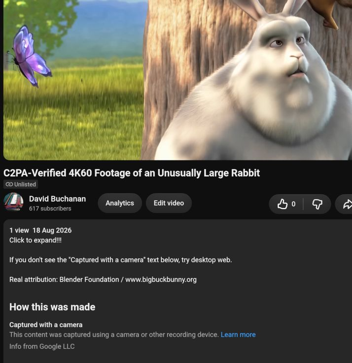

THE FRONT PAGE
EDITOR'S NOTE: As automated synthesis displaces foundational labor and hardware abstractions fray, software development risks becoming an exercise in managing decay, yet the disciplined craft of resilient systems remains entirely ours to rebuild. #Erosion of software craft and hardware-software trust boundaries under automated efficiency pressures
BREAKING VECTORS

Cryptographic Proofs of Origin Fall Apart on Real Android Hardware
Security researcher David Buchanan demonstrated that Android root exploits easily trick C2PA camera implementations into signing synthetic AI images as pristine camera captures. Relying on software attestation APIs to enforce photographic truth fundamentally misjudges hardware trust boundaries.
NEURAL HORIZONS
Efficiency gains threaten to accelerate the erosion of traditional software craft
As machine learning compression mimics biological efficiency, development velocity may surge while deep architectural comprehension plummets. The primary risk is not systems failure, but a irreversible reliance on black-box optimization over intentional design.
LAB OUTPUTS
SQLite’s Graph Counterpart Promises Local Simplicity, Raises Query Scaling Questions
LatticeDB aims to bring embedded, zero-config graph querying directly into application processes without the overhead of standalone servers. While eliminating network hops simplifies small-scale dependency tracing, pushing complex graph traversals into local memory risks crashing the host process under unexpected workloads.
Headlong offers tiny control loops to keep drifting agents on the rails
By stripping persistent agent management down to a minimal harness, Headlong trades rich orchestration features for predictable execution, revealing how far modern stacks have degraded simple software hygiene. The risk, as usual, is that developers treat lightweight scaffolding as a substitute for actual domain constraints.
INFERENCE CORNER
Warnock Engine Offloads Vector Math directly to GPU Geometry Pipelines
By shifting vector graphics rasterization away from CPU compute and onto GPU geometry amplification hardware, Warnock achieves low-latency rendering, though developers trade deterministic cross-vendor output for raw frame rates.